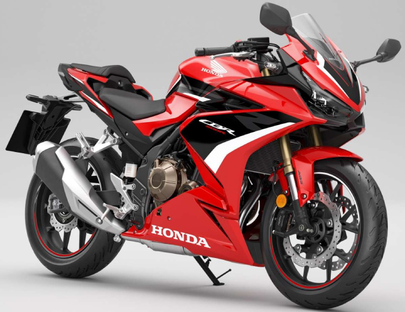
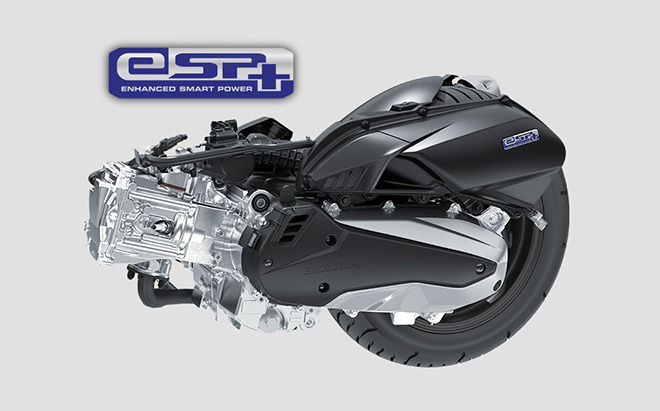
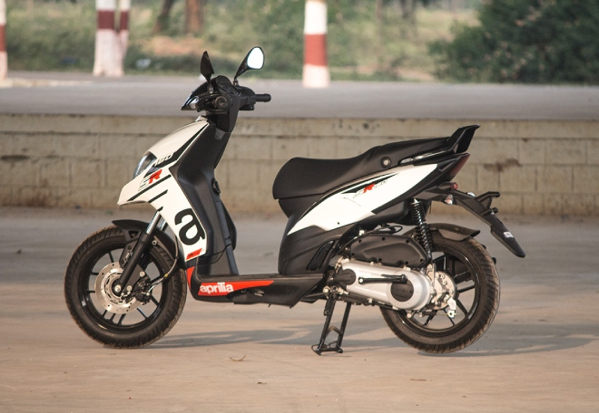
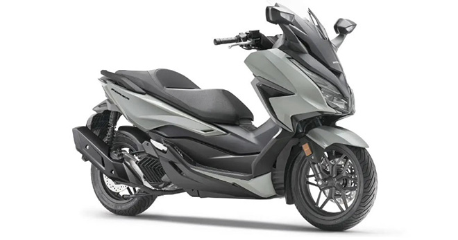

|  |
Bộ đôi 2022 Honda CB500R và CB500X “lên đời” nhiều trang bị xịn xò2022 Honda CB500R và CB500X mới cập nhật tại thị trường Đông Nam Á, chơi “trội” trong phân khúc mô tô tầm trung, khi sở hữu nhiều trang bị rất xịn. Hai mẫu mô tô tầm trung 2022 Honda CB500R và Honda CB500X vừa mới được cập nhật tại thị trường Thái Lan. Hai mẫu xe này mang hai phong cách khác nhau, trong đó CB500R có phong cách xe mô tô thể thao, còn CB500X có phong cách xe phượt. Tại thị trường Thái Lan CB500R và CB500X mới có bán niêm yết lần lượt là 34.499 RM (khoảng 187,3 triệu đồng) và 36.099 RM (196 triệu đồng). Mức giá này chưa bao gồm thuế đường, phí bảo hiểm và đăng ký. Người mua xe sẽ được tặng gói bảo hành 2 năm hoặc tương đương với quãng đường đi 20.000 km. |
|  |
Cùng động cơ eSP+ 125cc, vậy Lead 2022 có mạnh mẽ giống SH 125i?Đây chắc chắn là điều mà khá nhiều người thắc mắc, và rằng nên mua Lead 2022 "có lợi" hơn vì giá rẻ hơn khá nhiều. Sau suốt nhiều năm liền chỉ bổ sung màu sắc mới thì tháng 12/2021, Honda Việt Nam bất ngờ trình làng thế hệ Lead 2022 với hàng loạt các thay đổi, và động cơ là một trong những thay đổi lớn nhất. Theo đó, Lead 2022 được trang bị động cơ eSP+ xy lanh đơn dung tích 125cc, giống với mẫu tay ga cao cấp SH125i. |
|  |
2022 Aprilia SR160 nhìn “nghịch tướng”, sánh cạnh Honda Vario 160Mẫu xe tay ga 2022 Aprilia SR160 rất mạnh mẽ, đem lại trải nghiệm lái chất lượng cao, thoải mái và công thái học tốt, và lại sở hữu tướng mạo khá “nghịch”, có thể đối đầu kịch tính với tânbinh Honda Vario 160. Gần đây, làng xe tay ga phân khối dưới 200cc lại đang trở nên dậy song khi xuất hiện một vài mẫu xe có thể nói là “máu mặt” và được nhiều người hâm mộ mong đợi. Mới nhất là Honda Vario ;160 hay còn gọi là Click 160 mà giới thông tin về xe tốn không biết bao “giấy mực” bàn tán. Thế nhưng nhiều người cũng không quên, ngoài Vario 160 thì còn có một mẫu xe tay ga khác cùng phân khối là 2022 Aprilia SR 160 cũng sở hữu nhiều điểm rất ấn tượng. Một khi chạm chán với Vario 160 thì mẫu xe ga Aprilia cũng có thể tạo ra “sóng gió” không nhỏ với ấn phẩm đến từ nhà sản xuất Nhật Bản Honda. |

|
KTM 390 2022 trình làng: "Lột xác" ngoại hình, nâng cấp trang bịMẫu xe được thiết kế với ngoại hình giống các đàn anh trong phân khúc adventure, mang tới cho người dùng nhiều cảm hứng khi sử dụng. KTM 390 Adventure 2022 mới đây đã chính thức trình làng tại Ấn Độ và hiện đã được chuyển tới các đại lý phân phối chính hãng để sẵn sàng tới tay người tiêu dùng. Phiên bản mới nhất của KTM 390 Adventure 2022 đã mang tới hàng loạt các thay đổi mà ttrước tiên phải kể về ngoại hình. Theo đó, xe được cải tạo theo hướng làm tăng tính adventure tourer của xe, và lấy cảm hứng từ đàn anh KTM 890 Adventure mới nhất. Thiết kế bình xăng được thay đổi và mặt nạ trước dường như được mở rộng hơn chút. Ngoài ra, xe cũng có những lựa chọn màu sắc mới bên cạnh sự thay đổi về đồ họa trên xe. |
|  |
Chiếc xe ga vừa ra mắt của Honda còn cao cấp hơn cả SH 125iTuy nhiên giá bán tới 152 triệu đồng tại thị trường châu Âu của Forza 125 2022 cũng không phải là con số nhỏ. Sau khi được giới thiệu tại triển lãm EICMA 2021 vào cuối năm 2021 thì mới đây, Honda tại châu Âu đã chính thức bán ra Forza 125 2022. Theo đó, giá lăn bánh của Foza 125 2022 tại châu Âu là 4949 bảng Anh - khoảng 152 triệu đồng khi quy đổi ra tiền Việt. |